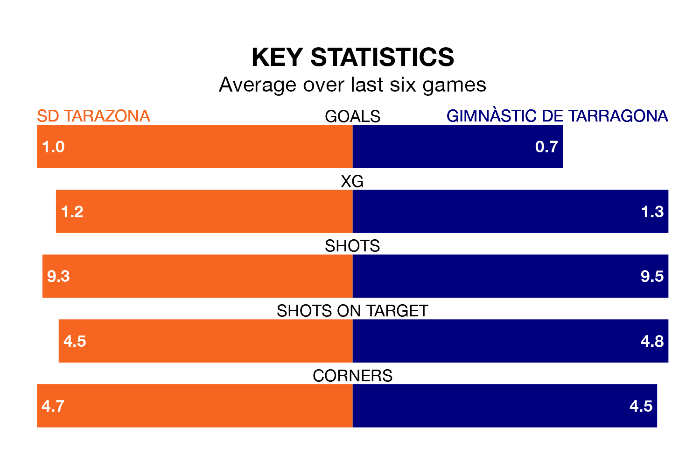

SD Tarazona host Gimnàstic de Tarragona on Sunday on the back of three consecutive wins in Primera Division RFEF Group 1.
Tarazona have picked up 11 points from their last six games, and they face a Gimnàstic de Tarragona side who have also won their last two matches, and collected the same number of points from the last possible 18.
In Alberto Varó Lara, Gimnàstic de Tarragona can rely on one of the league's safest pair of hands. He has kept 12 clean sheets in his 20 appearances this season, and only one other 'keeper – Cultural y Deportiva Leonesa's Miguel Bañuz Antón – has been able to prevent the opposition scoring on more occasions in Primera Division RFEF Group 1.
In Tarazona's net, Yoel Ramírez has seven clean sheets in 13 games. He has conceded a goal every 130 minutes, 20% more often than the 158 minutes between goals for Varó Lara.
The away side are third in the table after 31 games, of which they have won 16 and drawn nine, earning 57 points.
The hosts are nine places behind Gimnàstic de Tarragona in 12th, with eight wins and 12 draws putting them on 36 points.
With 23 goals in 31 games so far this season, Tarazona are the league's second-lowest scorers with 0.7 goals per game. But they are conceding fewer than average too, letting in 27 goals at a rate of 0.9 per game.
Gimnàstic de Tarragona, meanwhile, are above average scorers, with 1.1 goals per game, compared to a league average of 1.0. They have conceded 0.6 goals per game.
Tarazona's last match was on April 7, a 1-0 win against CD Lugo, with Borja San Emeterio Díaz getting the goal for Tarazona.
Gimnàstic de Tarragona beat CF Fuenlabrada 1-0 last time out, also on April 7, with Jaume Jardi Poyato on the scoresheet.
Updated: 11:20 (UTC), 09/04/24